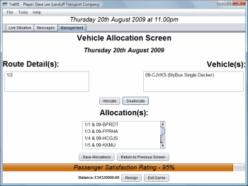

On the Allocation Screen (shown above), you will see two columns - the left-hand column contains route schedules which have not had vehicles assigned to them and the right-hand column contains vehicles which have no route schedules assigned to them. To allocate a vehicle to a route schedule, click on the vehicle you would like to use (from the right-hand list) and the route you would like to assign it to (the left-hand list) and click the "Allocate" button.
If you would like to change an allocation, simply click on the allocation you wish to change from the Allocations list and click the "Deallocate" button. You are then free to reassign either that vehicle or route as a new allocation (see "Allocate Vehicles" above).
Click "Save Allocations" to confirm the allocations, and you will be returned to the Management Screen.